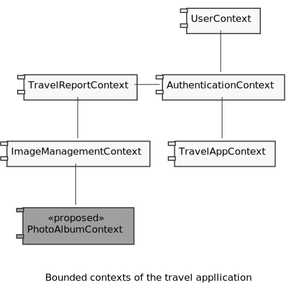
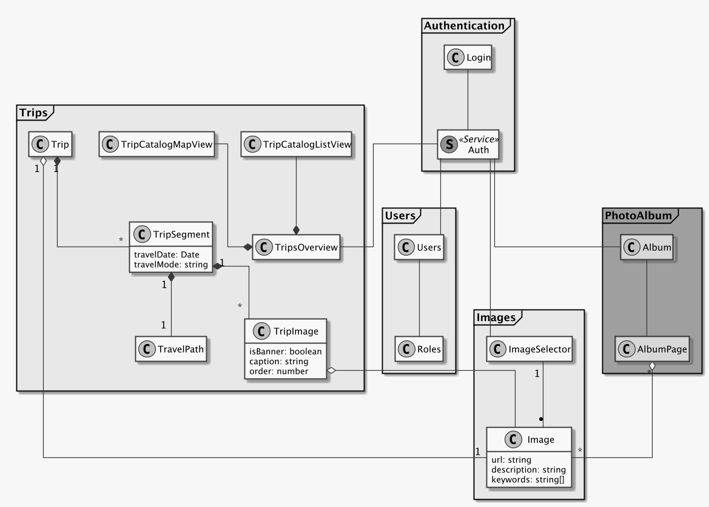

Frontend Architecture
In the previous article about the backend architecture, we saw how we can split the functionality of the application into several bounded contexts — separately deployable groups of functionality for the backend. The same reasoning about splitting the application applies to the frontend, so we can draw the following component diagram based on the discussion of the backend:

Representing bounded contexts in Angular code
In the Angular framework, bounded contexts can be represented by modules, where each module would represent a bounded context. These modules can be set up to lazy load, which helps with the initial loading of the app to load only the immediately required functionality and makes the app seem to load faster.
The downside of simply using Angular modules for the bounded contexts is the expectation to be able to separately deploy and version the different contexts, yet have them all work together. By creating them as Angular modules, we’re having to build them all at the same time and embed them into one Angular app. The separation of the individual components is therefore lost.
Manfred Steyer has an interesting summary of the various mechanisms to implement micro-frontends and their advantages and challenges.
In my mind, the optimal solution would be one where the implementation for each bounded context is independent of and can be deployed independently from any others, with any functionality or elements shared between multiple contexts shared in a separate library, as a shared kernel in DDD speak.
Looking at the table in the article under the headline “Evaluation,” we see that separate/ independent development and deployment is possible for a few approaches , with “using iframes” and “loading different SPAs” being the most appealing. The bad part of loading different SPAs, or multiple copies of the same framework if we stick with only one version of Angular, is the massive amount of data loading we’re going to be doing. Ideally, we’ll load the framework only once and not multiple times.
On the other hand, if we put emphasis on small deployment size, we end up with the drawback of having to do a build of the entire Angular application when we deploy a new version of any bounded context. The build times could be significant for a large application, which would benefit most from this DDD treatment and the separation in to bounded contexts.
The path I’m going to investigate later in this series is to build various Angular libraries as npm modules — one for each bounded context and store the built artifacts in npm as versioned packages.
This would allow for good encapsulation, as we can define an access control layer (ACL) approach in our library to only expose the functionality and interfaces that we want other modules/libraries to use and know about. It would take the form of an Angular service to assure that we only have one instance of the ACL globally when using Angular’s dependency injection mechanism. The current thinking on how the ACL would talk to the various pieces within a bounded context would be through Rx.js, as its event-driven paradigm of hot observables fits nicely with the sought abstraction, encapsulation and decoupling.
This micro-frontend approach will become particularly interesting in the case of the editing of trip days, as on that page, according to the wireframes, we’ll use visual building blocks from two different bounded contexts on the same page at the same time — trip information and image information. If I had to pick an initial approach, Angular’s potential to support multiple router outlets in one component template would potentially be a feasible approach for this case.
Stay tuned!
Sketching the frontend architecture
Let’s take a look at the following class diagram, which groups the classes into their respective bounded contexts:

In the AuthenticationContext, we have the login component providing the login form, as well
as an AuthService. As discussion previously, this AuthService could be imported in every
other component to check the login status of the user, and also mentioned earlier was the use
of JSON Web Tokens (JWT) to permit the validation of an authentication user without a query
to the backend.
Left out from this bounded context for clarity are other components belonging to an
AuthenticationContext, such as password reset.
The TripsContext
Focusing on the trips context, we see at its root how the TripOverviewComponent uses the
AuthService to assure that the user has access to the data. The trip overview is using two
other components, the TripCatalogListView and TripCatalogMapView to render the same data
for a trip in the two different presentations seen in the wireframes — in a map view and list
view, respectively.
It is, however, the TripOverviewComponent which will contain the logic to grow and shrink the
two display components depending on user input.
When the user selects a trip from the list or the map, we swap the entire TripOverviewComponent
via the router to show the TripComponent, which will display the travel route taken as well
as the content the user wrote for that travel day, or TripSegment.
Once the user has selected a trip to view, we continue by rendering the TripComponent, which
gets an instance of the TripSegmentComponent injected , which in turn has access to
potentially multiple TrimpImages and a TravelPath.
This arrangement of Angular components for the display of a Trip permits us to separate the concerns of rendering the trip summary and content from the display of the taken travel route on a map and the respective images associated with that travel day.
Here we also see again the introduction of a TripImageComponent, which will reference
images from the ImagesContext and permit the
display of images with custom captions, similar to the TripImage class in the backend.
Handling authentication for the frontend
Since we’re displaying data that is specific to a user, we need to provide an authentication and
authorization mechanism. What’s more, we need to make sure on every API request that the
user has access to the data requested. In order to accomplish this behavior in an efficient
manner, Angular provides HttpInterceptors, which are a kind of middleware that sits
- between the creation of an HTTP request and the actual request being sent over the web and
- between the response coming in and being passed to the Observable from the HTTP request
method,
get()for example.
Thus, these interceptors are a prime candidate for handling the authentication by augmenting
every HTTP request with an authorization token or session ID and also listening for custom
headers being set by the server which might have an effect on the behavior of the application.
I will explain the Interceptor concept in an upcoming post in my blog, together with developing
some code examples of how this could be implemented.